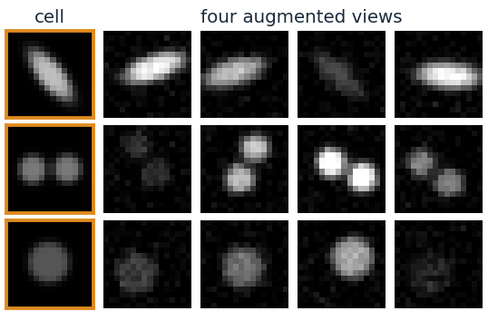
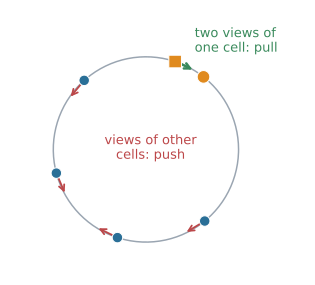
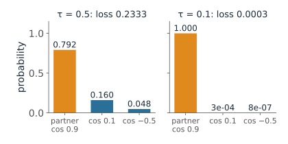
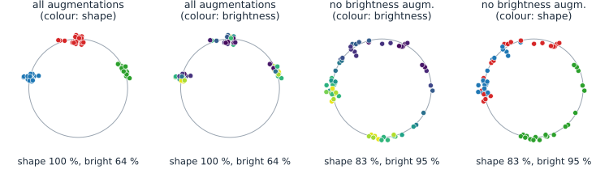
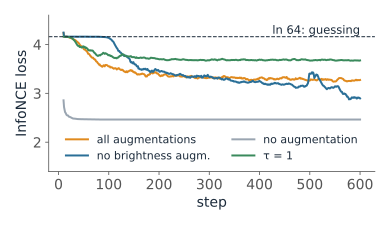

Contrastive learning
About this lecture
Without labels, what should two images have in common to count as “the same”? Contrastive learning lets us say it with augmentations.
- Two views of the same image should get close embeddings, views of different images distant ones.
- The InfoNCE loss: “pick the matching view among many”, a softmax classification; the temperature.
- The augmentations define what counts as the same: they decide what the features ignore.
- Collapse, and why the negatives prevent it.
Slides titled The math give the formulas and proofs; the ideas are complete without them.
Two views of the same cell
Take an unlabelled image and make two augmented views of it: rotated, shifted, brightened or dimmed, with noise.
- Whatever the network should output for the cell, it should output it for both views.
- But a constant output also does that. So also: views of different cells should get different embeddings.
- The network must find what stays the same under the augmentations and differs between cells: here, the shape.

Pull together, push apart
- An encoder maps each view to an embedding, a vector scaled to length 1 (a point on a sphere; in the demo, on a circle).
- Similarity = the dot product = the cosine of the angle between two embeddings.
- Pull the two views of each cell together; push the views of other cells in the batch away (the negatives).
- No labels anywhere: the only “label” is which two views came from the same image.

InfoNCE: pick your partner
For view 1 of a cell, score every view 2 in the batch by similarity / τ, turn the scores into probabilities (softmax), and pay -\ln p of the true partner: a classification with as many classes as the batch.
By hand: cosines with the partner and two others 0.9, 0.1, -0.5; τ = 0.5:
- scores 1.8, 0.2, -1.0; e^{\text{score}}: 6.05, 1.22, 0.37; probabilities 0.792, 0.160, 0.048;
- loss -\ln 0.792 = 0.233.
Guessing among 64 cells costs \ln 64 = 4.16: where every training curve starts.

The math: InfoNCE
Batch of N images, unit embeddings \mathbf z_i, \mathbf z_i' of their two views, temperature \tau:
\mathcal L = -\frac1N\sum_{i=1}^N \ln\frac{\exp(\mathbf z_i^\top\mathbf z_i'/\tau)}{\sum_{j=1}^N\exp(\mathbf z_i^\top\mathbf z_j'/\tau)}\qquad(\text{and the same with } \mathbf z, \mathbf z' \text{ swapped, averaged}).
- It is the cross-entropy of a softmax classifier whose “class weights” are the other views \mathbf z_j'/\tau (backprop unit: gradient = predicted − wanted). With p_{ij} the softmax:
\frac{\partial\mathcal L}{\partial\mathbf z_i} = \frac1{N\tau}\sum_j (p_{ij} - [i = j])\,\mathbf z_j' = \frac1{N\tau}\Big(\underbrace{\textstyle\sum_j p_{ij}\mathbf z_j'}_{\text{push from negatives}} - \underbrace{\mathbf z_i'}_{\text{pull to partner}}\Big).
- Each negative pushes with weight p_{ij}: the most similar (“hardest”) negatives push hardest.
- Then through \mathbf z = \mathbf u/\|\mathbf u\|: \partial\mathcal L/\partial\mathbf u = (\mathbf g - \mathbf z(\mathbf z^\top\mathbf g))/\|\mathbf u\|, and backpropagation into the encoder.
- \ln N - \mathcal L is a lower bound on the mutual information between the two views (van den Oord et al., 2018): hence “NCE”, noise-contrastive estimation.
The temperature
- τ divides the similarities before the softmax (attention has the same knob).
- Small τ: the softmax is sharp; only the closest negatives matter, and the loss is near 0 once the partner is clearly the closest (by hand: τ = 0.1 gives 0.0003).
- Large τ: all negatives push about equally, gently; the pull dominates.
- Demo after 600 steps, 5-nearest-neighbour accuracy of the shape on the embeddings (chance 33 %): τ = 0.2: 100 %; τ = 1: 73 % (a weak push, the clusters blur); τ = 0.05: 100 %, but the cells crowd on one side of the circle and training is jumpier.
- In practice τ ≈ 0.05–0.5, chosen like a learning rate.
Try it: views pulled together, pushed apart
The augmentations define “the same”

- With a brightness augmentation the network cannot use brightness to recognise a cell: it learns shape, and forgets the staining.
- Without it, brightness is the easiest way to tell 64 cells apart: the embedding sorts by brightness and the shapes mix.
- Neither is wrong. You choose what the features ignore, by choosing the augmentations.
Augmentations for microscopy
| augmentation | the features ignore | harmful when |
|---|---|---|
| rotation, flip | orientation | handedness or a fixed direction matters (flow, polarity, a gradient) |
| intensity gain, offset, gamma | staining brightness, exposure | the readout is intensity (expression level, DNA content: cell-cycle phase) |
| blur, noise | focus, camera noise | fine texture is the phenotype |
| crop, scale | position, size | size is the phenotype (hypertrophy, nuclear size) |
| colour or channel shuffles | the stain’s hue | the channels mean different proteins |
- Cell-cycle phase from a DNA stain is mostly intensity (G1 vs G2 has twice the DNA): an intensity augmentation erases it.
- The training day uses the same augmentations in supervised training; the rule is the same: augment what does not matter.
Collapse, and why negatives
- Only pulling the views together has a perfect solution: the same output for every image. Loss −1, no information. That is collapse.
- With negatives, collapse is expensive: all scores equal, every partner has probability 1/N: loss \ln N, the worst value.
- Demo, no negatives: all 64 cells in one point (mean-vector length 1.00).
- Without augmentation the task is trivial in the other direction: the two views are identical, the loss falls at once (to 2.46), and the cells spread over the circle by any pixel detail: shape 58 %.

The math: alignment and uniformity
For large batches, InfoNCE splits into two terms (Wang and Isola, 2020):
\mathcal L \approx \underbrace{-\frac1\tau\,\mathbb E\big[\mathbf z^\top\mathbf z'\big]}_{\text{alignment: views together}} + \underbrace{\mathbb E_{\mathbf z}\Big[\ln\mathbb E_{\mathbf y}\, e^{\mathbf z^\top\mathbf y/\tau}\Big]}_{\text{uniformity: spread over the sphere}} + \ln N .
- Alignment alone is minimised by collapse (the same \mathbf z for every image). Uniformity alone by spreading the embeddings evenly, ignoring the pairs.
- Collapse: \mathbf z_i^\top\mathbf z_j' = 1 for all i, j gives exactly \mathcal L = \ln N.
- Perfect separation of N points on a circle is impossible for large N: the loss has a floor (2.46 for 64 cells at τ = 0.2 in the demo); in 128 dimensions there is much more room.
Contrastive learning as pseudocode
repeat:
take a batch of N unlabelled images
for each image i: two random augmentations → views v[i], v'[i]
z[i] = normalise(encoder(v[i])), z'[i] = normalise(encoder(v'[i]))
for each i: scores s[i][j] = z[i] · z'[j] / tau for all j
loss += −log softmax(s[i])[i] # pick the partner
(and the same with z and z' swapped)
update the encoder by backpropagation
keep the encoder; throw away the restBatches, negatives and false negatives
- More negatives = a harder classification = better features: batches of thousands, or a queue of embeddings from earlier batches.
- False negatives: two different images of the same kind of cell are pushed apart as if they were different. With 3 shapes and 64 cells, most negatives are false negatives! It works anyway, because the pull is stronger than the push within a cluster; with many images of one rare phenotype it can hurt.
- In microscopy: crops from the same well or plate share background, illumination and stain batch, which makes them easy to tell apart from other plates: the network learns the plate (a batch effect), not the cell. Take negatives from the same plate, or correct the features afterwards (next unit).
Using the features
- After training, the encoder is a feature extractor: embeddings of new images, without the augmentations.
- Evaluate (and use) them as in the attention unit: a linear probe with a few labels, or k-nearest neighbours: the demo’s percentages are leave-one-out 5-NN accuracies.
- Clusters in the embedding are candidate phenotypes: but they follow whatever the augmentations left in, including the batch effects.

A lower loss is not better features: the lowest curve (no augmentation) gives the worst ones.
Summary
| Idea | In one line |
|---|---|
| Views | two augmented copies of one unlabelled image are a positive pair; other images are negatives |
| InfoNCE | softmax over the batch, −log p of the partner: “pick the matching view” |
| Temperature | small τ: sharp, the hardest negatives dominate; large τ: a gentle push |
| Augmentations | define what counts as the same: what they vary, the features ignore |
| Collapse | pulling alone gives a constant; negatives make collapse cost ln N |
| Pitfalls | false negatives, batch effects; a lower loss is not better features |
Next: learning without negatives, and the large pretrained models built this way.